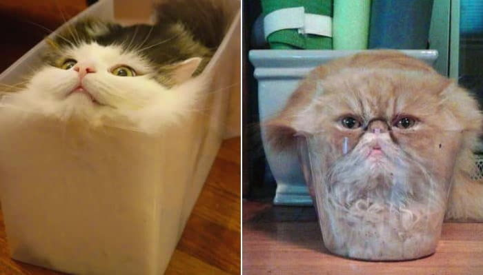

고양이의 뼈는 워낙 연골이 많아서 인간이나 개와 달리 몸 전체가 물렁물렁하다. 그 덕분에 머리뼈만 들어갈 수 있는 틈이면 어디든지 비집고 들어갈 수 있을 정도로 엄청난 유연성을 갖고 있다.[64] 우스갯소리로 연체동물이라거나 실은 고체가 아니라 액체라는 이야기도 있을 정도다. 고양이 액체설(Cats are Liquid)는 고양이가 커다란 컵이나 물통 같은 곳에 마치 액체인 것처럼 들어가 있는 듯한 것을 해학으로 표현한 일종의 밈이다. 2017년 이그노벨상 물리학상에 고양이 유체설 논문을 쓴 마르크-앙투안 파르댕(Marc-Antoine Fardin)이 선정되었다.
